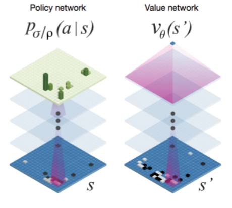
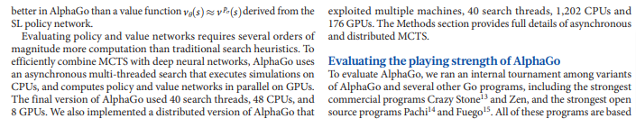
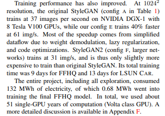
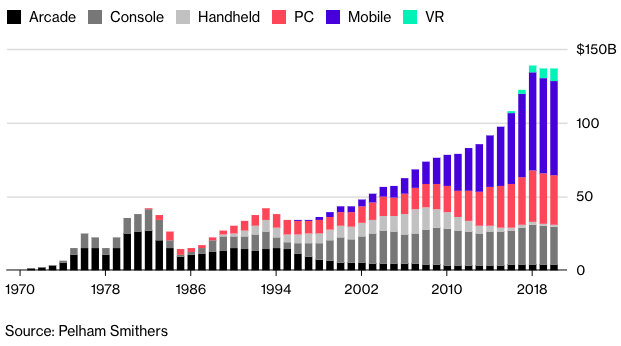
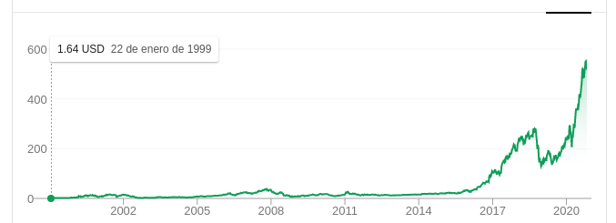
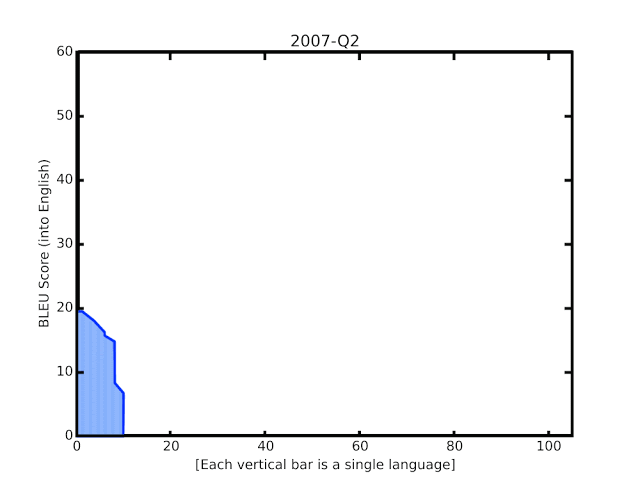
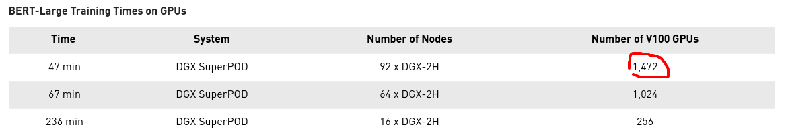

Module 3.2 - GPUs
Module 3.2
Matmul and CUDA
Review
Strategy
Use Python for general operations
Use Numba for the core tensor ops
Allow users to add new Numba functions
How does it work?
Work
def my_code(x, y):
for i in range(100):
x[i] = y + 20
...
my_code(x, y)
fast_my_code = numba.njit()(my_code)
fast_my_code(x, y)
fast_my_code(x, y)Terminology : JIT Compiler
Just-in-time
Waits until you call a function to compile it
Specializes code based on the argument types given.
Code Transformation
Transform
def my_code(x, y):
for i in prange(100):
x[i] = y + 20
...
my_code(x, y)
fast_my_code = numba.njit(parallel=True)(my_code)
fast_my_code(x, y)
fast_my_code(x, y)Nondeterminism
No guarantee on ordering
Need to be careful with reductions
Speedups will depend on system
Quiz 1
Quiz
Today's Class
Matmul
CUDA
Threads
Memory
Example: Matmul

Example: Matmul

Computations

Matmul Simple

Starter Code
Walk through output.
Find row and column of input
Simultaneous zip / reduce.
Simple Matmul
Code
A.shape == (I, J)
B.shape == (J, K)
out.shape == (I, K)Simple Matmul Pseudocode
Code
for outer_index in out.indices():
for inner_index in range(J):
out[outer_index] += A[outer_index[0], inner_index] * \
B[inner_index, outer_index[1]]Compare to zip / reduce
Code
ZIP STEP
C = zeros(broadcast_shape(A.view(I, J, 1), B.view(1, J, K)))
for C_outer in C.indices():
C[C_out] = A[outer_index[0], inner_val] * \
B[inner_val, outer_index[1]]
REDUCE STEP
for outer_index in out.indices():
for inner_val in range(J):
out[outer_index] = C[outer_index[0], inner_val,
outer_index[1]]Optimizations
Avoiding indexing
Where to put parallelism?
GPUs
AlphaGo - 2016
AlphaGo - 2016
StyleGan 2 - 2019

StyleGan 2 - 2019
CUDA
{kind=link}
NVidia's programming language for GPU
Compute Unified Device Architecture
Like standard programming but in parallel
NVidia Structure
NVidia Structure
Main Driver
Custom shader languages
Graphics targeted operations
General Purpose GPUs
NVidia: can we make these programmable
~2008: CUDA langauge
Machine Learning
Growth in ML parallels GPU development
Major deep learning results require GPU
All modern training is on GPU (or more)
ML
Is this enough?
GPUs
Challeges
Hard to code for directly.
Particularly hard to code efficiently.
Goal: hide complexity from users.
Threads
CUDA Abstraction

Thread code
Code
def add(a, b):
b = a + 10
cuda_add = numba.cuda.jit()(add)
cuda_add[1, 1](a, b)CUDA Abstraction

Threads code
Code
def add(a, b):
b = a + 10
cuda_add = numba.cuda.jit()(add)
cuda_add[1, 10](a, b)CUDA Abstraction

Threads code
Code
def add(a, b):
b = a + 10
cuda_add = numba.cuda.jit()(add)
cuda_add[1, (10, 10)](a, b)CUDA Abstraction

Block code
Code
def add(a, b):
b = a + 10
cuda_add = numba.cuda.jit()(add)
cuda_add[(10, 10), (10, 10)](a, b)Check
Code:
def printer(a):
print("hello!")
a[:] = 10 + 50
printer = numba.cuda.jit()(printer)
a = numpy.zeros(10)
printer[10, 10](a)Output
Output
hello!
hello!
hello!
hello!
hello!
...Stack
Threads: Run the code
Block: Groups "close" threads
Grid: All the thread blocks
Total Threads: threads_per_block x total_blocks